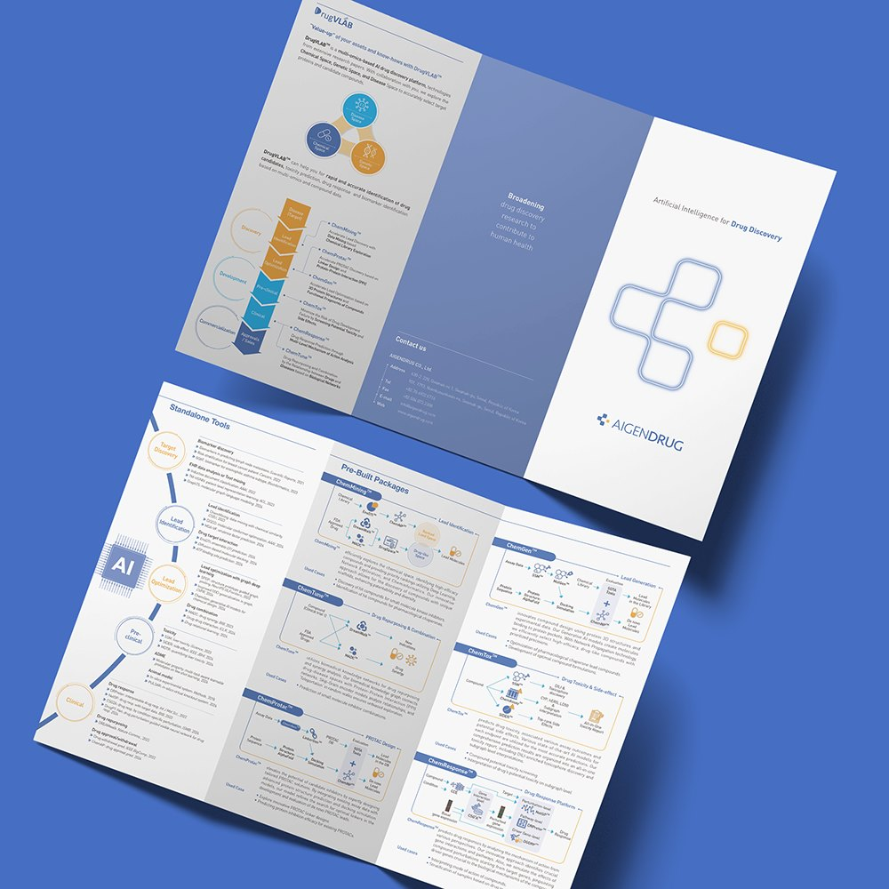
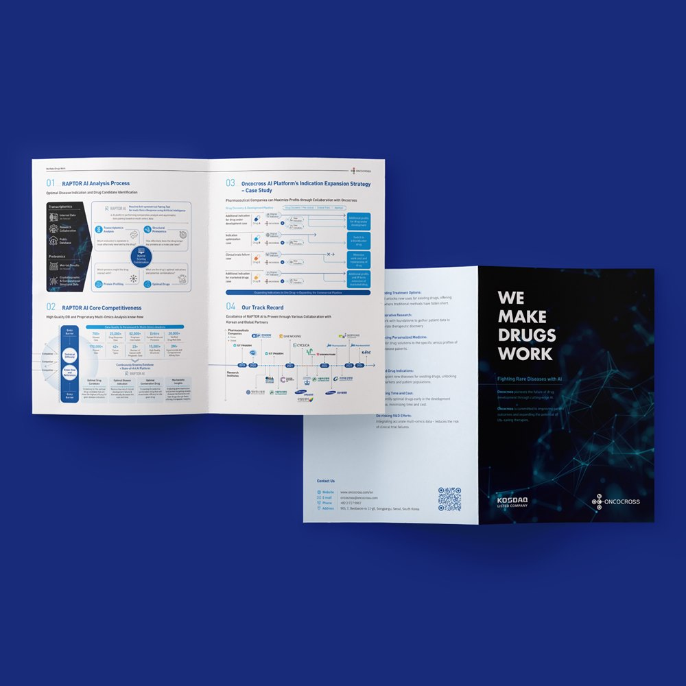
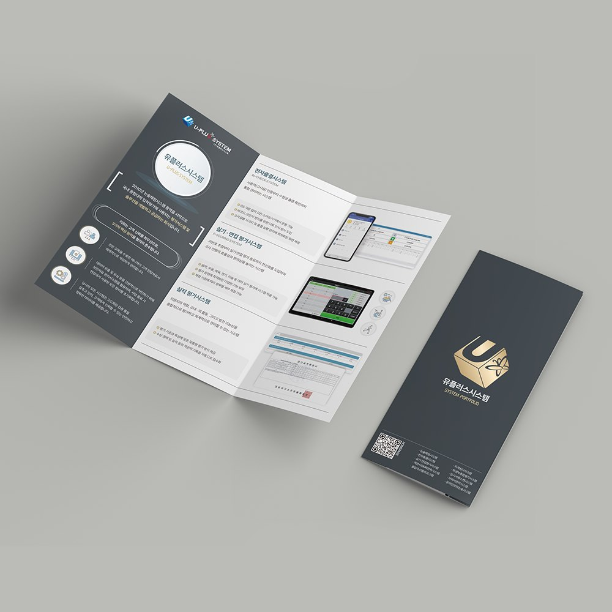
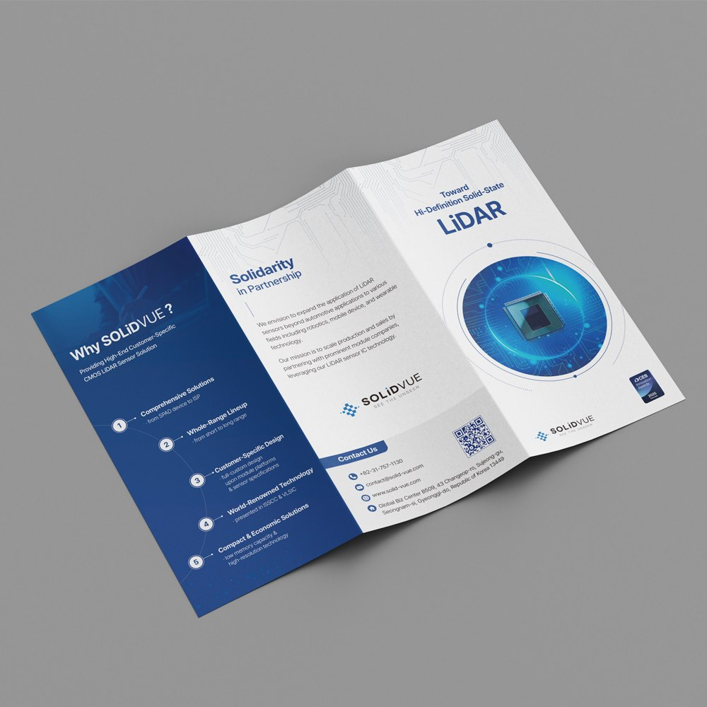
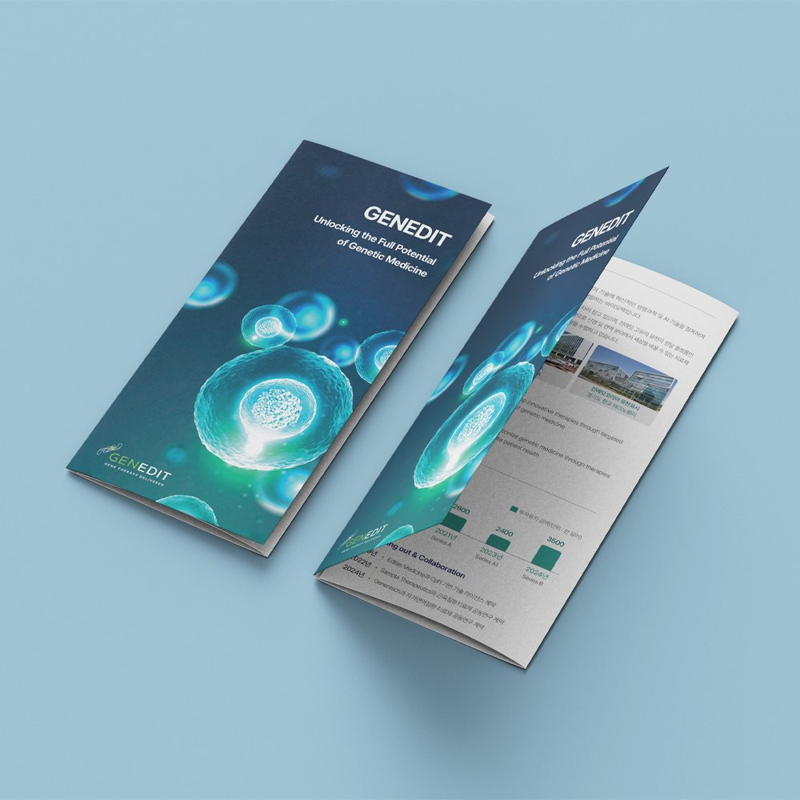
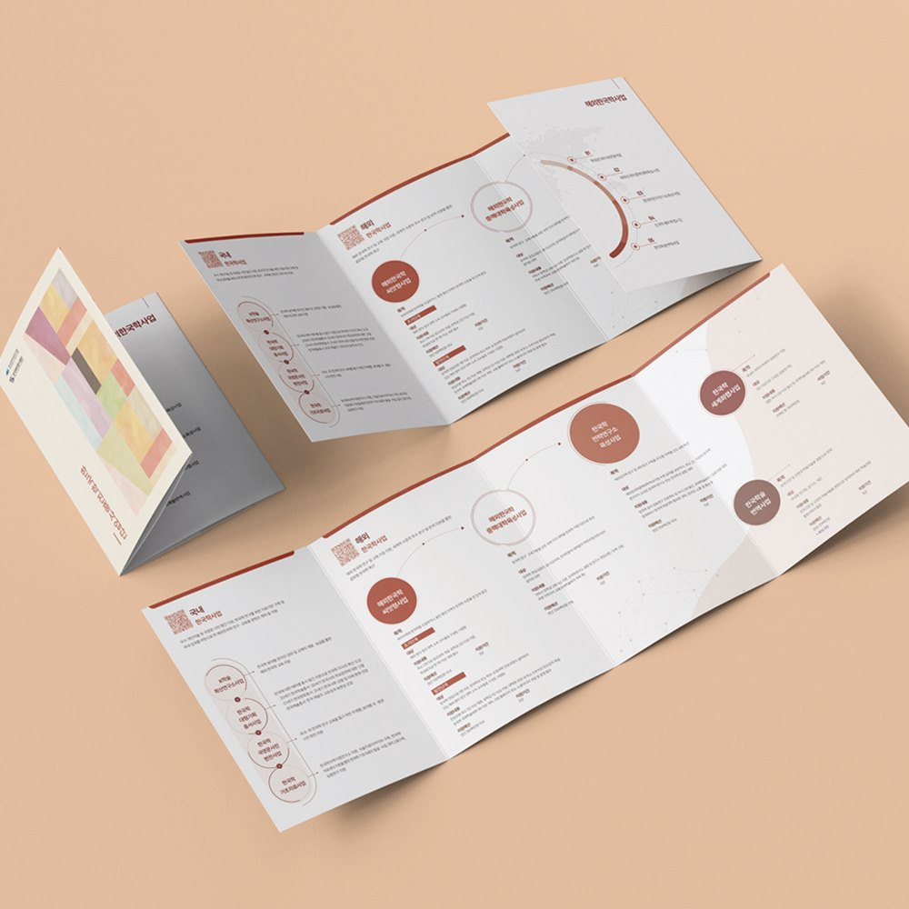
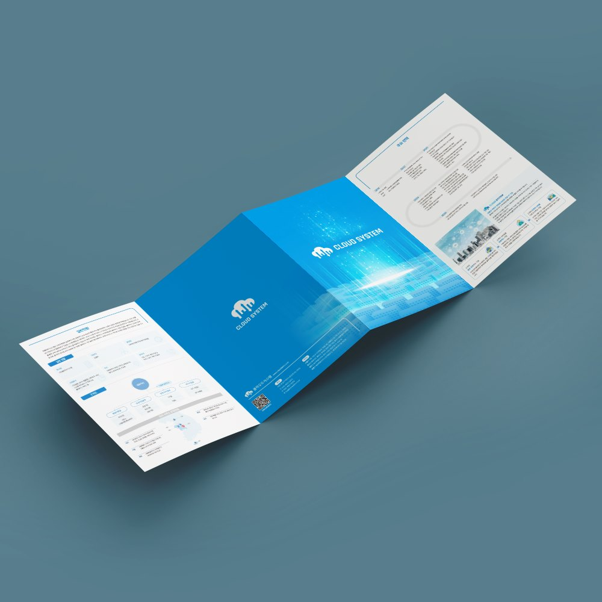

개소식 · 심포지엄 · 설명회 날짜가 정해졌을 때
행사일에서 역산해 일정을 잡고 시안 확정 후 2~3영업일 안에 받아보실 수 있습니다. 대전 시내는 직접 납품합니다.
대전 · 세종 · 충청권 방문 미팅평일 09:00 ~ 18:00
LEAFLET
접는 순서가 읽는 순서를 정하는 인쇄물, 리플렛.
행사·기관·병원 안내 리플렛을 접지 설계부터 인쇄까지 빠르게 만듭니다.

대전지사의 방식
리플렛은 펼치기 전에 보이는 면과 펼친 뒤에 보이는 면이 다릅니다.
개소식·심포지엄·학회 부스처럼 날짜가 정해진 행사용 리플렛은 일정 역산이 전부입니다.
이런 경우
행사일에서 역산해 일정을 잡고 시안 확정 후 2~3영업일 안에 받아보실 수 있습니다. 대전 시내는 직접 납품합니다.
3단 · 4단 접지로 기술과 서비스를 소개하고 전시회 수량에 맞춰 옵셋 인쇄로 단가를 낮춥니다.
진료 시간 · 시간표 · 약도가 한눈에 들어오게 구성하고 의료광고 문구를 검토합니다. 재인쇄 데이터를 관리합니다.
제작 항목
필요한 항목만 골라 의뢰하셔도 좋습니다.
LEAFLET
개소식, 심포지엄, 설명회 안내 리플렛을 일정에 맞춰 제작합니다.
프로그램 순서와 연사 소개를 한 장에 정리합니다.

LEAFLET
연구기관·기업의 서비스와 기술을 3단·4단 접지로 소개합니다.
전시회 부스와 방문객 배포용으로 판형을 정합니다.

LEAFLET
진료 안내, 수강 안내, 입학 안내처럼 배포용 리플렛을 만듭니다.
지도와 연락처, 시간표가 한눈에 들어오게 구성합니다.
Use case
한 장을 접어 담는 인쇄물입니다. 브로슈어보다 가볍고, 전단보다 정리됩니다.
가볍고 얇아 대량 배포에 유리합니다.
항목이 나뉘는 정보를 면마다 끊어 담습니다.
사양표와 이용 절차를 한 장에 정리합니다.
공공 제출용 규격과 영문 병기도 대응합니다.
Form
아래 점선이 접히는 위치입니다.
면이 넓어 이미지를 크게 쓰기 좋습니다. 정보량이 많지 않은 행사 안내에 적합합니다.
표지 → 내지 → 상세 순으로 읽는 순서가 자연스럽게 잡혀 기관 · 서비스 소개용으로 가장 널리 쓰입니다.
한 번에 쫙 펼쳐지는 형태입니다. 표 · 연혁 · 지도처럼 이어서 봐야 하는 정보에 적합합니다.
양쪽 날개를 가운데로 모아 접습니다. 문을 열듯 펼쳐지는 연출이 가능해 첫인상이 중요한 인쇄물에 씁니다.
총 8면으로 담을 수 있는 정보량이 가장 많아 제품 라인업, 다국어 병기 안내물에 사용합니다.
Size
펼쳤을 때 기준 사이즈입니다. 접은 크기와 면별 폭을 함께 적었습니다.
A4 리플렛 · 펼침 297 × 210mm
| 접지 | 접은 사이즈 | 면 구성 |
|---|---|---|
| 2단 리플렛 | 148.5 × 210mm | 총 4면 · 바깥쪽 / 안쪽 동일 |
| 3단 리플렛 | 99 × 210mm | 총 6면 · 바깥쪽 97 / 97 / 100mm, 안쪽 100 / 97 / 97mm |
A3 리플렛 · 펼침 420 × 297mm
| 접지 | 접은 사이즈 | 면 구성 |
|---|---|---|
| 2단 리플렛 | 210 × 297mm | 총 4면 · 바깥쪽 / 안쪽 동일 |
| 3단 리플렛 | 139 × 297mm | 총 6면 · 바깥쪽 138 / 141 / 141mm, 안쪽 141 / 141 / 138mm |
Paper
배포 환경에 맞춰 지종을 제안해 드립니다.
뚜렷한 색감을
표현하는 재질
매끈하고
차분한 느낌
코팅이 없어
필기가 잘됨
부드러운 표면의
고급 재질
리플렛은 150g ~ 200g 사이에서 대부분 결정됩니다.
배포량이
많을 때
홍보지 ·
행사 소개용
비치용으로
오래 쓸 때
메뉴판 ·
박람회용
차분한 고급 마감
지문이 덜 남음
색이 진하고 선명
사진 위주에 적합
로고에 금속 광택
프리미엄 인쇄물
입체 효과와
모서리 둥근 마감
진행 순서
행사 일정과 배포 수량,
원고 준비 상태를 확인합니다.
접지 방식과 면 구성을 정하고
견적과 일정을 안내합니다.
펼친 면 기준 시안을 만들어
접힌 순서로 확인받습니다.
문구와 일정 정보를 검수하고
수정을 반영합니다.
접지 가공 후 행사장이나
사무실로 납품합니다.
제작 사례





자주 묻는 질문
대전에서 리플렛을 의뢰하실 때 가장 많이 받는 질문입니다.
원고가 준비되어 있으면 디자인 3~5영업일, 디지털 인쇄 2~3영업일로 약 1~2주 안에 받아볼 수 있습니다. 옵셋 인쇄는 인쇄·접지에 1주 정도가 더 필요합니다.
리플렛은 한 장을 접어 만드는 인쇄물이고, 팜플렛은 여러 장을 묶은 얇은 책자입니다. 안내 내용이 6면 안에 들어가면 리플렛, 그 이상이면 팜플렛이 적당합니다.
정보량과 배포 방법으로 정합니다. 3단 접지는 봉투 발송과 거치대 비치에 유리하고, 대문 접지는 펼쳤을 때 큰 그림 하나를 보여줄 때 좋습니다. 실물 접지 샘플을 보고 결정하실 수 있습니다.
네. 디지털 인쇄로 50부, 100부 단위의 소량도 진행합니다. 세미나 참석자 수에 맞춰 수량을 정하고, 남은 데이터로 추가 인쇄도 바로 가능합니다.
네. 국문판과 영문판을 같은 레이아웃으로 만들거나 한 장에 병기하는 방식 중 선택할 수 있습니다. 번역은 자체 번역 부서가 진행합니다.
네. 유성·둔산·대덕 등 대전 전 지역과 세종·청주는 필요한 날 방문해 접지 샘플을 보며 상담드립니다. 전화 1600-9487로 요청해 주세요.
FIRST DESIGN DAEJEON
기획 · 디자인 · 번역 · 촬영 · 인쇄를 한 팀이 진행합니다.
원고가 정리되기 전이라도 목차와 일정부터 함께 잡아 드립니다.